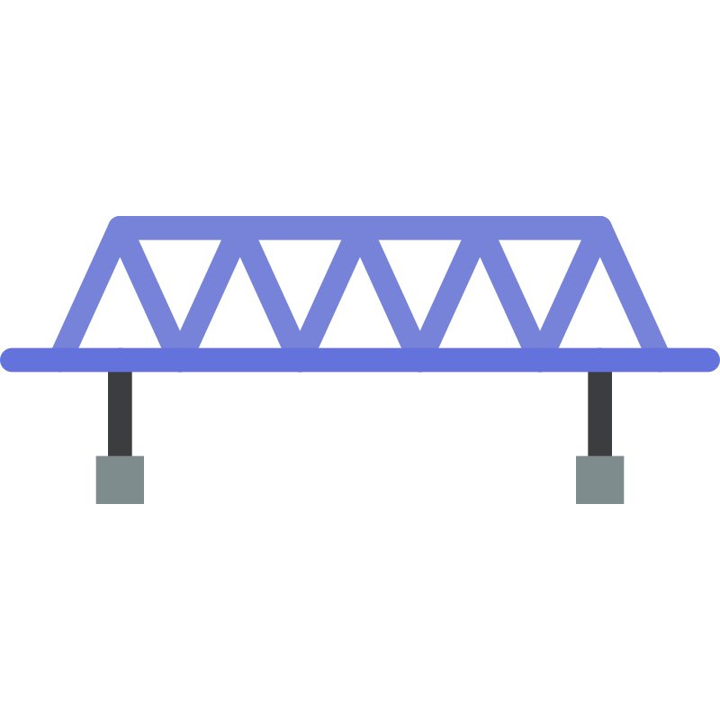

Trains, Streams and Boats
A train crosses a pole in 12 seconds and a 180 m platform in 24 seconds. Find the length of the train.
Q

12 s

180 m
/24 s
L
Train crosses pole in 12 s, 180 m platform in 24 s. Find train length.
12 s
180 m
24 s
Given
Pole crossing time = 12 s
Platform length = 180 m, crossing time = 24 s
Let train length = L m
Crossing pole → distance = length of train (L)
Speed = L12 … Eq. 1
Crossing platform → distance = train length + platform
Total = L + 180
Speed = L + 18024 … Eq. 2
Platform length = 180 m, crossing time = 24 s
Let train length = L m
Crossing pole → distance = length of train (L)
Speed = L12 … Eq. 1
Crossing platform → distance = train length + platform
Total = L + 180
Speed = L + 18024 … Eq. 2
Step 1
Same train, same speed → Equation 1 = Equation 2
L12 = L + 18024
24L = 12(L + 180)
24L − 12L = 12 × 180
12L = 2160
L = 180 m
L12 = L + 18024
24L = 12(L + 180)
24L − 12L = 12 × 180
12L = 2160
L = 180 m
G
Pole time = 12 s, Platform = 180 m / 24 s
Train length = L
Eq.1: Speed = L12
Eq.2: Speed = L+18024
Train length = L
Eq.1: Speed = L12
Eq.2: Speed = L+18024
1
L ÷ 12 = (L+180) ÷ 24
L = 180 m
L = 180 m